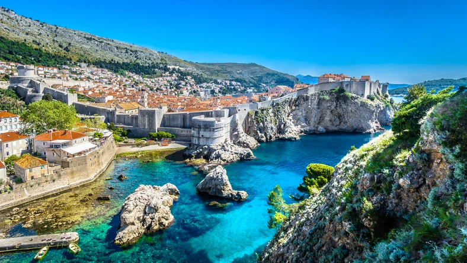
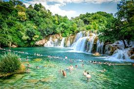

Zobacz najciekawsze miejsca w Chorwacji
Dubrownik
Jednym z miejsc, które koniecznie trzeba zobaczyć, jest z pewnością Dubrownik. Niektórzy twierdzą, że panorama tego miasta, oglądana z jednego z okolicznych wzgórz, to najpiękniejszy widok świata. To oczywiście subiektywne odczucie, bo na ziemi jest wiele cudownych miejsc, ale z pewnością są tacy, dla których właśnie Dubrownik jest najpiękniejszy.
Wodospady Krka
Miłośnicy piękna natury powinni także zwrócić uwagę na Park Narodowy paklenica. To tu znajdują się dwa cudowne, krasowe kaniony. To wspaniałe miejsce na wędrówki. Velka Pakelnica ma długość ponad 14 km, a zbocza i ściany mają wysokość często ponad 400 m. Turystów spragnionych trekkingu nie powinna natomiast zwieść nazwa Mala Pakelnica, bo choć jest to mniejszy kanion, to wyznaczony szlak turystyczny jest o wiele bardziej wymagający. Pakelnica to miejsce, w którym jest dużo mniej odwiedzających niż nad morzem. Wiele osób uważa, że właśnie dlatego warto tu szukać aktywnego wypoczynku.